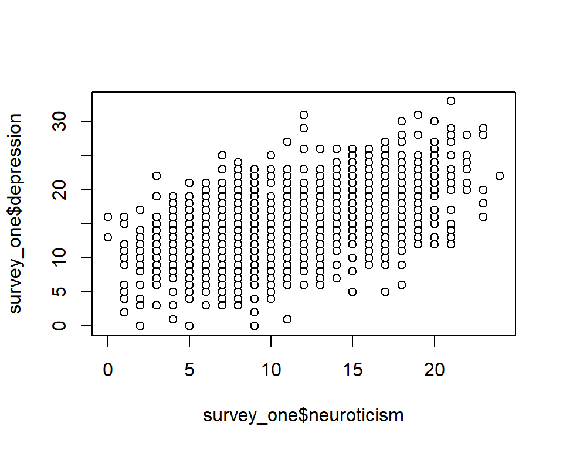

Section 6 An Example Analysis
Now that we’ve covered the fundamentals of R, we can go through an example analysis start to finish to see everything works in practice.
We’ll use an example dataset from the carData package, a study
looking at personality and how it relates to people’s decision to volunteer
as a research participant.
We’ll run through some different steps, working towards some simple analyses
of the data. In this format, the steps will be broken up in different chunks,
but normally they would all be saved in a single script which could
be run in one go. In a script, it can be useful to label each
section with a commented heading - if you end a comment line with at least 4 #’s,
RStudio automatically treats it as a heading, and you’ll be able to jump
to that section:
### Load libraries #####
# Code goes here
### Load data ##########
# More code hereFirst, we’ll make sure we have the carData and sjPlot packages
installed - please copy and run this code in your console (don’t
worry if you don’t understand it for now):
for (req_package in c("car", "carData", "sjPlot", "effects")) {
if (! require(req_package, character.only = TRUE)) {
install.packages(req_package)
}
}6.1 Loading libraries
The first step in any analyses is to load any libraries we’re going to use. If you’re part way through an analysis and realise you’re going to use another library, go back and add it to the top of the script.
For now, we’re only using the sjPlot library, which produces
nice looking plots from regression models.
library(sjPlot)6.2 Loading data
Normally, this is where you would read your data in from an external
file, using something like readr::read_csv() or haven::read_spss().
Instead, we’ll just take the existing carData::Cowles data and
assign a copy of it to a new variable name.
# A short, simple name for you main dataset is nice because you'll
# probably have to type it out a lot
cow = carData::CowlesThis is a reasonably big dataset, with 1421 rows (visible in the “Environment”
pane in RStudio, or you can get it with nrow(cow)). If you just print
the data in the console by entering cow, you’ll get a lot of output
(but luckily not all 1000+ rows). Instead, it’s often best to use
head(data) to see the first few rows when you just want to look at the
basic format of your data:
head(cow)## neuroticism extraversion sex volunteer
## 1 16 13 female no
## 2 8 14 male no
## 3 5 16 male no
## 4 8 20 female no
## 5 9 19 male no
## 6 6 15 male noWe can check the format of the data using str(), short for
structure:
str(cow)## 'data.frame': 1421 obs. of 4 variables:
## $ neuroticism : int 16 8 5 8 9 6 8 12 15 18 ...
## $ extraversion: int 13 14 16 20 19 15 10 11 16 7 ...
## $ sex : Factor w/ 2 levels "female","male": 1 2 2 1 2 2 1 2 2 2 ...
## $ volunteer : Factor w/ 2 levels "no","yes": 1 1 1 1 1 1 1 1 1 1 ...All the columns have a sensible format here: the two personality
scores are integers (whole numbers), and the two categorical
variables are factors6. If you need to change
the type of any variables in your data, it’s best to do it
right after loading the data, so you can work with consistent
types from that point on.
6.3 Recoding
Let’s go through some basic recoding. First we’ll create a variable to show whether someone is above or below the mean for extraversion. We’ll do this manually first, using the tools we’ve covered so far:
# Create a vector that's all "Low" to start with
cow$high_extraversion = "Low"
# Replace the values where extraversion is high
cow$high_extraversion[cow$extraversion > mean(cow$extraversion)] = "High"
# Make it a factor
cow$high_extraversion = factor(
cow$high_extraversion,
levels = c("Low", "High")
)Next we’ll code people as either “introverts” or “extroverts” based
on their scores. We’ll use a function called ifelse() to do this,
which makes the process we carried out above a bit more automatic.
It will also handle missing values better than our simple manual procedure, leaving missing scores missing in the result.
cow$personality_type = ifelse(
test = cow$extraversion > cow$neuroticism,
yes = "Extravert",
no = "Introvert"
)
# Make it a factor
cow$personality_type = factor(
cow$personality_type,
levels = c("Introvert", "Extravert")
)ifelse() makes it easy to create
a vector based on a test, picking values from the yes argument
when the test is TRUE and from the no argument when the test
is FALSE:

We’ll also code neuroticism as either “low” or “high” based on whether it’s above the mean:
cow$high_neuroticism = ifelse(
cow$neuroticism > mean(cow$neuroticism),
"High",
"Low"
)
cow$high_neuroticism = factor(
cow$high_neuroticism,
levels = c("Low", "High")
)Since the example dataset we’re using doesn’t have quite enough variables, let’s also create a new one, a score on a depression scale similar to PHQ-9:
# Advanced code: run this but don't worry too much about what
# it's doing
set.seed(1)
cow$depression = round(
19 +
0.5 * cow$neuroticism +
-0.8 * cow$extraversion +
0.5 * (cow$sex == "female") +
rnorm(nrow(cow), sd = 3)
)We’ll recode this depression score into categories using
cut(), which allows us to divide up scores into
more than two categories:
cow$depression_diagnosis = cut(
cow$depression,
breaks = c(0, 20, 25, 33),
labels = c("None", "Mild", "Severe"),
include.lowest = TRUE
)6.4 Descriptive Statistics
Before doing any actual analysis it’s always good to use descriptive statistics to look at the data and get a sense of what each variable looks like.
6.4.1 Quick data summary
You can get a good overview of the entire dataset using
summary():
summary(cow)## neuroticism extraversion sex volunteer high_extraversion personality_type high_neuroticism
## Min. : 0.00 Min. : 2.00 female:780 no :824 Low :691 Introvert:663 Low :722
## 1st Qu.: 8.00 1st Qu.:10.00 male :641 yes:597 High:730 Extravert:758 High:699
## Median :11.00 Median :13.00
## Mean :11.47 Mean :12.37
## 3rd Qu.:15.00 3rd Qu.:15.00
## Max. :24.00 Max. :23.00
## depression depression_diagnosis
## Min. : 0.00 None :1195
## 1st Qu.:12.00 Mild : 196
## Median :15.00 Severe: 30
## Mean :15.07
## 3rd Qu.:18.00
## Max. :33.006.4.2 Frequency tables
You can count frequencies of categorical variables with
table():
table(cow$sex)##
## female male
## 780 641table(cow$sex, cow$volunteer)##
## no yes
## female 431 349
## male 393 2486.4.3 Histograms: distributions of continuous variables
Histograms are good for checking the range of scores
for a continuous variable to see if there are any
issues like skew, outlying scores etc.. Use hist()
to plot the histogram for a variable:
hist(cow$neuroticism)6.4.4 Scatterplots: relationship between two continuous variables
Scatterplots are useful for getting a sense of whether or
not there’s a relationship between two continuous variables.
The basic plot() function in R is quite flexible, so to
produce a scatter plot we just give it the two variables
and use type = 'p' to indicate we want to plot points.
plot(cow$neuroticism, cow$depression, type='p')
This plot doesn’t look great - we’ll cover ways to produce
better plots later. But you can see there’s a positive
correlation between neuroticism and depression.7
To check the correlation we can use cor():
cor(cow$neuroticism, cow$depression)## [1] 0.53411786.5 Analysis
6.5.1 T-test
We can conduct a simple t test of the differences in depression
scores between males and females using the t.test() function.
We can get the vector of scores for males and females by subsetting
and passing them to the function:
dep_sex_test = t.test(cow$depression[cow$sex == "male"],
cow$depression[cow$sex == "female"])
dep_sex_test##
## Welch Two Sample t-test
##
## data: cow$depression[cow$sex == "male"] and cow$depression[cow$sex == "female"]
## t = -4.275, df = 1356.4, p-value = 2.045e-05
## alternative hypothesis: true difference in means is not equal to 0
## 95 percent confidence interval:
## -1.735880 -0.643867
## sample estimates:
## mean of x mean of y
## 14.41654 15.60641Since we’ve saved the model object (basically a list) to a variable, we can
access the values we’re most interested in if we need to use them again:
dep_sex_test$p.value## [1] 2.044769e-05To discover what values are available, you can look at the Value
section of the ?t.test help page, or just type dep_sex_test$ and
let RStudio bring up the list of suggestions.
6.5.2 Formulas: a simple mini-language for expressing models
If we look at ?t.test, we can see that there are actually
two different options for running a test: either pass two separate
vectors of scores representing the groups we want to compare,
or use a formula.
Formulas in R allow you to spell out models using a compact syntax,
allowing you to focus on the overall structure of your model. Formulas
in R contain ~ (a “tilde”), with the outcome on the left of the ~ and
the predictors in the model on the right. For our t-test we have
depression as the outcome and sex as the grouping variable (our only
“predictor”). Running a t test with a formula looks like:
t.test(depression ~ sex, data = cow)##
## Welch Two Sample t-test
##
## data: depression by sex
## t = 4.275, df = 1356.4, p-value = 2.045e-05
## alternative hypothesis: true difference in means between group female and group male is not equal to 0
## 95 percent confidence interval:
## 0.643867 1.735880
## sample estimates:
## mean in group female mean in group male
## 15.60641 14.41654When we’re using a formula, we can usually use a data = argument
to say where all the variables in the model come from. R will automatically
look them up in the dataframe, without us having to access them manually.
6.5.3 Regression
We can also run a simple linear regression, prediction depression
(our outcome) using neuroticism, extraversion and sex. In R,
linear regression can be done using lm() (short for linear
model). Our model looks like:
dep_reg = lm(depression ~ neuroticism + extraversion + sex,
data = cow)
summary(dep_reg)##
## Call:
## lm(formula = depression ~ neuroticism + extraversion + sex, data = cow)
##
## Residuals:
## Min 1Q Median 3Q Max
## -9.7374 -2.0909 -0.0555 2.1794 11.8903
##
## Coefficients:
## Estimate Std. Error t value Pr(>|t|)
## (Intercept) 19.72960 0.36979 53.35 <2e-16 ***
## neuroticism 0.49740 0.01707 29.13 <2e-16 ***
## extraversion -0.82358 0.02113 -38.98 <2e-16 ***
## sexmale -0.38793 0.16718 -2.32 0.0205 *
## ---
## Signif. codes: 0 '***' 0.001 '**' 0.01 '*' 0.05 '.' 0.1 ' ' 1
##
## Residual standard error: 3.082 on 1417 degrees of freedom
## Multiple R-squared: 0.6553, Adjusted R-squared: 0.6545
## F-statistic: 897.8 on 3 and 1417 DF, p-value: < 2.2e-166.5.3.1 Why was that so easy?
The regression model above was simple to fit because:
- We had all our data in a nice clean dataframe (in long format)
- All our continuous variables were coded as numeric
- All our categorical variables (
sex) were coded as factors
Most of the setup for running models in R happens beforehand. Factors will be treated as discrete variables, and numeric variables as continuous variables, so make sure all your variables are the right type before you try to fit a model.
If you don’t have variables coded the right way, go back up to the “recoding” section of your script and fix them there.
6.5.3.2 Formula syntax
The syntax you use in formulas is special, and it doesn’t
necessarily mean the same thing as it would in regular R. For example
+ doesn’t mean “add these values together,” it just means “also
include this predictor.” The most important symbols in formula syntax
are:
+: used to separate each individual predictortime:group::creates an interaction term between two variables, and only that interaction term.time*group:*creates an interaction term between two variables, and also includes the individual main effects (timeandgroupin this example). Usually more useful than:because interactions generally don’t make sense without the main effects.1: when you use1as a predictor on its own, it means “include an intercept in the model.” This is the default so you don’t have to include it. Intercepts make sense in most models.0: signals that you don’t want to fit an intercept. Not recommended most of the time.
6.5.3.3 Working with a fitted model
Once we’ve saved a fitted model to a variable, we can use it,
check it and save it in lots of different ways. The most
useful way is to call summary(model) like we did above,
which produces a summary table for the coefficients along
with a few useful statistics like \(R^2\).
There are also hundreds of different functions that people have written to work with models and provide useful output, both built in to R and available in packages. When possible, look for a function that’s already been written - there’s no need to reinvent the wheel. But if you want something that’s not covered, all the data you need is available, and you can use it to produce exactly what you need.
plot(model)
(a built in command)
produces a few standard diagnostic plots that do things
like check the normality of your residuals and whether
particular outliers are affecting the fit:
# This temporarily switches R's plotting to a 2x2 layout
par(mfrow = c(2, 2))
plot(dep_reg)# Switch plots back to normal
par(mfrow = c(1, 1))
If you wanted to create the first plot from scratch, you could plot fitted(dep_reg) against resid(dep_reg).
plot_model from the sjPlot package can give
us a nice visualisation of the effects in our model, automatically
choosing the right kind of plot for the predictor depending on
whether it’s continuous or categorical:
plot_model(dep_reg,
# We want to see the effect of each predictor,
# but lots of other plot types are available
type = "eff",
terms = "neuroticism")plot_model(dep_reg,
type = "eff",
terms = "sex")You’re also not stuck with the default presentation
of results from summary(), as there are lots of ways
to turn your model into a nice-looking table for publication.
tab_model(), also from the sjPlot package, produces
good tables for regression models:
tab_model(dep_reg)Example tab_model output
6.6 Pointless flashy nonsense
Impress your friends and supervisors!
NOTE: Don’t try to run this code (for now), it requires some libraries that are tricky to install.
library(rgl)
library(rayshader)
hex_gg = ggplot(cow, aes(x = neuroticism, y = extraversion)) +
stat_bin_hex(aes(fill = stat(density), colour = stat(density)),
bins = 10,
size = 1) +
scale_fill_viridis_c(option = "B") +
scale_color_viridis_c(option = "B", guide = "none") +
labs(x = "Neuroticism", y = "Extraversion", fill = "",
colour = "") +
theme_minimal()
hex_gg
plot_gg(hex_gg, multicore = TRUE, windowsize = c(800, 800))
render_movie("silly.mp4", phi = 40, theta = 30)Some of the most common problems in R result from text data that should just be in
characterformat being stored asfactor.factorshould only be used if you have categorical variables with a fixed number of levels (usually a small number). If you have text columns, check how they’ve been stored.↩︎Keen readers will notice that the positive correlation is there because we put it there when generating the fake depression variable.↩︎